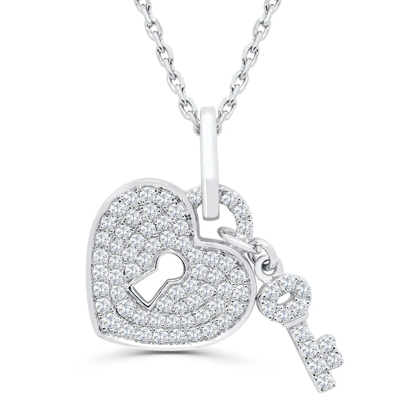
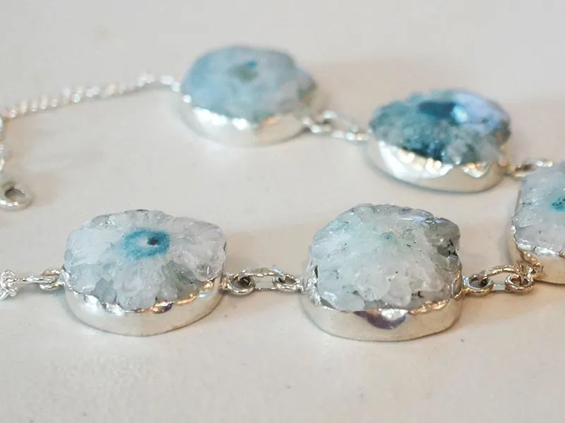
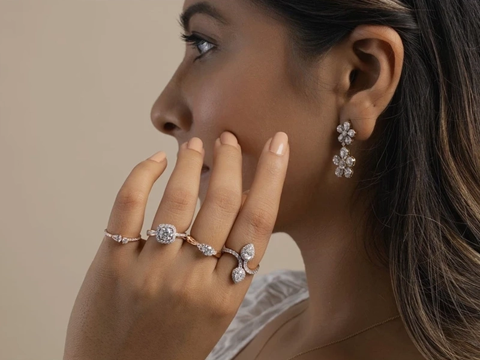

流行鈦鋼
✦ 經典品牌質感不褪色，自信不設限穿梭忙碌日常.流行鈦鋼系列，專為現代質感女性打造。擁有媲美貴金屬的堅硬度與細緻光澤，耐磨、防水、防汗，且極致親膚不易過敏。無論是揮汗運動、日常洗手還是午後的咖啡時光，都不必繁瑣摘下，隨時隨地展現率性耀眼的精緻感。✨流行鈦鋼三大核心優勢：防水防汗：不退色、不氧化，全天候耐戴無負擔。低敏親膚高穩定性材質，肌膚敏感也能安心佩戴。讓鈦鋼的堅毅與優雅，成為妳最完美的日常符號。

流行飾品.耳環
搖曳耳畔的微光，修飾輪廓的魔法側臉的完美角度，由耳環來定義。戴上一雙對的耳環，不只是造型的加分，更是對生活細節的精緻講究。✨耳環系列的精緻亮點：視覺修飾：巧妙拉長頸部線條、修飾輪廓，打造小臉視覺效果。輕盈無感：優化配戴配重，全天候配戴舒適無負擔、耳垂不拉扯。多樣材質：提供高階低敏針（抗敏鈦鋼 / S925純銀），肌膚敏感也能安心美麗。不論是俐落的職場穿搭，還是浪漫的約會假期，讓耳畔的每一次搖曳，都成為眼神停留的理由。
細節決定品味，配件翻轉風格流行飾品
本季流行飾品配件聚焦「冷調金屬」與「復古線條」從具備結構感的前扣粗鍊、液態流線銀戒，到展現隨性質感的極細圍巾與復古無框眼鏡，完美勾勒時尚輪廓。透過金銀雙色混搭與耳骨夾多層次疊戴，打破傳統穿搭界線。只需一件關鍵單品，就能點亮簡約日常，在鬆弛智性與俐落個性間自由切換，輕鬆堆疊出獨一無二的高級氣場！

腕間交織俐落光采，用細節堆疊專屬品味！流行手鍊配件
本季流行手鍊以前扣粗鍊、流線液態金屬與金銀雙色混搭為核心，完美修飾手腕線條。無論是單戴展現極簡俐落或是多層次自由疊戴，隨手一擺都能點亮穿搭焦點，輕鬆展現自信優雅的高級氣場！

從髮間綻放精緻光彩，用細節堆疊時尚靈魂！流行髮飾飾品配件
本季髮飾與飾品配件融合法式優雅與現代極簡設計，從流線金屬髮夾、質感髮箍，到靈動耳環與多層次手鍊，完美修飾臉部線條與造型細節。透過金屬光澤與異材質混搭，就能輕鬆為簡約穿搭注入精緻亮點。隨心翻轉搭配靈感，在優雅鬆弛與俐落個性間自由切換，舉手投足間盡顯自信優雅的高級氣場！
